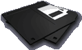

Anyone wishing to volunteer to write documentation (or completely revise the following documentation) please get in touch either directly to one of the GNUstep maintainers or to the general discussion mailing list.
Installation can be easy or complex, depending on the system you are trying to use. If you encounter problems that aren't discussed here, feel free to ask for help on the mailing lists
After things are installed, here's some information on customizing GNUstep for your purposes. Hopefully in the future there will be actual applications to help you do this, but for now...
Quick read documents for learning how to program with the GNUstep libraries. Collect them all! Write one of your own! Some are available for download in PostScript and LaTeX. See Nicola's Tutorial Page for info.
For general OpenStep documentation, you can fairly safely refer to Apple's documentation for the MacOS-X Foundation. We are also building up our own set of documentation. All the documentation listed below (and more) is on the ftp site as a compressed tar file in the docs directory.
Library Documentation
Class reference documentation.
The following documentation is not necessarily complete
Documentation if you are helping develop GNUstep itself. In particular, read the GNUstep coding standards.